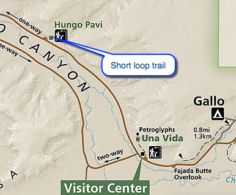
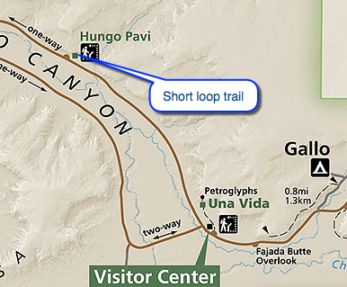

Hike New Mexico
w/ Tom & Ken
Hungo Pavi Site
| Difficulty | Round-trip | Type | Elev. Chg. | Exposure | Wow Factor | Facilities | Seasons | Photos | By Car |
|---|---|---|---|---|---|---|---|---|---|
| Very Easy | 0.25 mile | Out-and-back | 20 ft | Full sun | Ancient ruins | Visitor Center | All |
 |
 |


 

- May 21, 2016: Seen against the canyon walls
- May 21, 2016: Remnants of great walls
- May 21, 2016: From the interior looking out
- https://www.flickr.com/photos/139088815@N08/26989234640/in/album-72157668823314186
- https://www.flickr.com/photos/139088815@N08/27264818605/in/album-72157668823314186
- https://www.flickr.com/photos/139088815@N08/27264799975/in/album-72157668823314186
Hungo Pavi is the first site encountered on the loop road through the canyon, from the Visitor Center. It is a short walk, about 0.2 miles around the ruins, directly accessible from the parking lot. It also, like Una Vida, is not completely excavated, but does contains a large kiva. This Great House was built much later than the Una Vida site, around 1,000 AD or later.